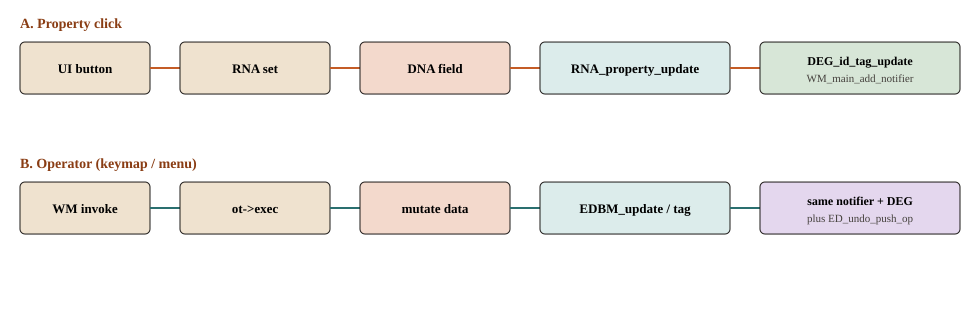

更新与撤销
改完如何让别人知道
视口不轮询每个顶点。属性路径和 Operator 路径在「标脏 + 通知」汇合。带 OPTYPE_UNDO 的命令再推一步撤销。

DEG_id_tag_update + WM_main_add_notifier(NC_GEOM | ND_DATA, id)。链 A：拖属性
WM_main
wm_window_events_process
wm_event_do_handlers
button_value_set /* interface.cc */
RNA_property_float_set /* writes DNA */
RNA_property_update /* interface_handlers.cc */
prop->update /* e.g. rna_Mesh_update_geom_and_params */
DEG_id_tag_update(...)
WM_main_add_notifier(NC_GEOM | ND_DATA, id)
wm_event_do_notifiers
wm_draw_update
/* next tick: wm_event_do_refresh_wm_and_depsgraph */
链 B：跑 Operator
wm_operator_invoke
ED_operator_editmesh /* poll */
edbm_subdivide_exec
BM_mesh_esubdivide
EDBM_update(mesh) /* editmesh_utils.cc */
DEG_id_tag_update(&mesh->id, ID_RECALC_GEOMETRY)
WM_main_add_notifier(NC_GEOM | ND_DATA, &mesh->id)
wm_operator_finished
ED_undo_push_op /* if OPTYPE_UNDO */
EDBM_update 还会按参数重算法线 / looptris，供编辑模式绘制。几何节点和修改器的「应用」发生在 depsgraph 求值，不是这个函数里——那是建模 / 渲染章。
Notifier 与撤销
入队：WM_event_add_notifier / WM_main_add_notifier（无 context 时，RNA update 常用后者）。出队：wm_event_do_notifiers，各编辑器 listener 决定重画哪块区域。
撤销：ot->flag 含 OPTYPE_UNDO 时，wm_operator_finished → ED_undo_push_op（editors/undo/ed_undo.cc）。执行期间 wm->op_undo_depth 增加，避免嵌套 op 再推一步。Python bpy.ops 默认常压住 undo，除非标明 is_undo。
接到建模 / 渲染
编辑模式多一跳：Operator → BMesh → 写回 Mesh → 上面的 tag。物体模式没有 BMesh。求值之后才分视口 / Cycles，见地图 渲染 和 渲染章。